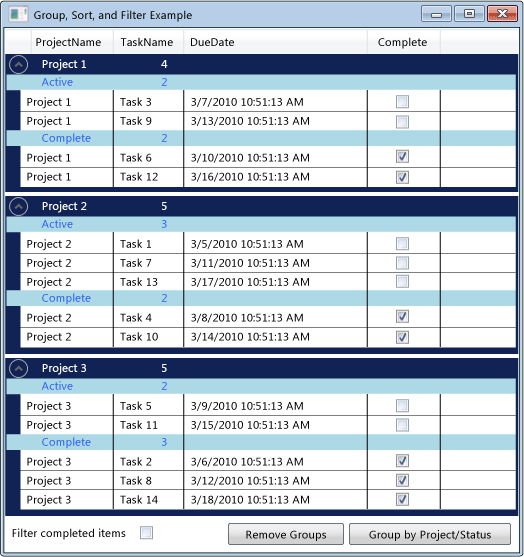

Практическое руководство. Группирования, сортировки и фильтрации данных в элементе управления DataGrid
Часто бывает полезно для просмотра данных в DataGrid по-разному, группирования, сортировки и фильтрации данных. Чтобы группировать, сортировать и фильтровать данные в DataGrid, привяжите его к CollectionView , поддерживает эти функции. Затем можно работать с данными в CollectionView без влияния на базовый источник данных. Изменения в представлении коллекции отражаются в DataGrid пользовательский интерфейс (UI).
CollectionView Класс предоставляет функции для источника данных, который реализует группировки и сортировки IEnumerable интерфейс. CollectionViewSource Класса позволяет задавать свойства CollectionView из XAML.
В этом примере коллекция Task связанным объектам в CollectionViewSource. CollectionViewSource Используется в качестве ItemsSource для DataGrid. Группирование, сортировка и фильтрация выполняются на CollectionViewSource и отображаются в DataGrid пользовательского интерфейса.
 сгруппированных данных в элементе управления DataGrid
С помощью CollectionViewSource как ItemsSource
Для группирования, сортировки и фильтрации данных в DataGrid привязать элемент управления, DataGrid для CollectionView , поддерживает эти функции. В этом примере DataGrid привязан к CollectionViewSource , предоставляет эти функции для List<T> из Task объектов.
Для привязки к CollectionViewSource, элемент управления DataGrid
Создать конфигурацию сбора данных, который реализует IEnumerable интерфейс.
Если вы используете List<T> для создания коллекции, следует создать новый класс, наследуемый от List<T> вместо создания его экземпляра из List<T>. Это позволяет для привязки данных к коллекции в XAML.
Note
Объекты в коллекции должны реализовывать INotifyPropertyChanged измененный интерфейс и IEditableObject интерфейс выполнился DataGrid правильно реагировать на изменения свойства. Дополнительные сведения см. в разделе Реализация уведомления об изменении свойств.
// Requires using System.Collections.ObjectModel; public class Tasks : ObservableCollection<Task> { // Creating the Tasks collection in this way enables data binding from XAML. }Warning
It looks like the sample you are looking for does not exist.
В XAML, создайте экземпляр класса коллекции и задайте директивы x: Key.
В XAML, создайте экземпляр CollectionViewSource класса, задайте директивы x: Keyи установите экземпляр класса коллекции как Source.
<Window.Resources> <local:Tasks x:Key="tasks" /> <CollectionViewSource x:Key="cvsTasks" Source="{StaticResource tasks}" Filter="CollectionViewSource_Filter"> </CollectionViewSource> </Window.Resources>Создайте экземпляр DataGrid и укажите ItemsSource свойства CollectionViewSource.
<DataGrid x:Name="dataGrid1" ItemsSource="{Binding Source={StaticResource cvsTasks}}" CanUserAddRows="False">Чтобы получить доступ к CollectionViewSource из кода, используйте GetDefaultView метод, чтобы получить ссылку на CollectionViewSource.
ICollectionView cvTasks = CollectionViewSource.GetDefaultView(dataGrid1.ItemsSource);Warning
It looks like the sample you are looking for does not exist.
Группировка элементов в элемент управления DataGrid
Чтобы указать, как элементы группируются в DataGrid, использовании PropertyGroupDescription типа, чтобы сгруппировать элементы в представлении источника.
Для группирования элементов в элементе управления DataGrid с помощью XAML
Создание PropertyGroupDescription , задающий свойство для группировки. Можно указать свойство в XAML или в коде.
В XAML, задайте PropertyName имя свойство для группировки.
В коде передайте имя свойства для группирования по конструктору.
Добавить PropertyGroupDescription для CollectionViewSource.GroupDescriptions коллекции.
Добавьте дополнительные экземпляры PropertyGroupDescription для GroupDescriptions коллекции, чтобы добавить дополнительные уровни группирования.
<CollectionViewSource.GroupDescriptions> <PropertyGroupDescription PropertyName="ProjectName"/> <PropertyGroupDescription PropertyName="Complete"/> </CollectionViewSource.GroupDescriptions>ICollectionView cvTasks = CollectionViewSource.GetDefaultView(dataGrid1.ItemsSource); if (cvTasks != null && cvTasks.CanGroup == true) { cvTasks.GroupDescriptions.Clear(); cvTasks.GroupDescriptions.Add(new PropertyGroupDescription("ProjectName")); cvTasks.GroupDescriptions.Add(new PropertyGroupDescription("Complete")); }Warning
It looks like the sample you are looking for does not exist.
Чтобы удалить группу, удалите PropertyGroupDescription из GroupDescriptions коллекции.
Чтобы удалить все группы, вызовите Clear метод GroupDescriptions коллекции.
ICollectionView cvTasks = CollectionViewSource.GetDefaultView(dataGrid1.ItemsSource); if (cvTasks != null) { cvTasks.GroupDescriptions.Clear(); }Warning
It looks like the sample you are looking for does not exist.
Если элементы группируются в DataGrid, можно определить GroupStyle , указывающий внешний вид каждой группы. Можно применить GroupStyle путем добавления его в GroupStyle коллекцию DataGrid. При наличии нескольких уровней группировки, можно применить различные стили для каждого уровня. Стили применяются в порядке, в котором они определены. Например если определить два стиля, первый будет применять к группам строк верхнего уровня. Второй стиль будет применен ко всем группам строк на втором уровне и ниже. DataContext Из GroupStyle является CollectionViewGroup , представляющий группу.
Чтобы изменить внешний вид заголовков групп строк
Создание GroupStyle , определяющий внешний вид группы строк.
Поместите GroupStyle внутри
<DataGrid.GroupStyle>теги.<DataGrid.GroupStyle> <!-- Style for groups at top level. --> <GroupStyle> <GroupStyle.ContainerStyle> <Style TargetType="{x:Type GroupItem}"> <Setter Property="Margin" Value="0,0,0,5"/> <Setter Property="Template"> <Setter.Value> <ControlTemplate TargetType="{x:Type GroupItem}"> <Expander IsExpanded="True" Background="#FF112255" BorderBrush="#FF002255" Foreground="#FFEEEEEE" BorderThickness="1,1,1,5"> <Expander.Header> <DockPanel> <TextBlock FontWeight="Bold" Text="{Binding Path=Name}" Margin="5,0,0,0" Width="100"/> <TextBlock FontWeight="Bold" Text="{Binding Path=ItemCount}"/> </DockPanel> </Expander.Header> <Expander.Content> <ItemsPresenter /> </Expander.Content> </Expander> </ControlTemplate> </Setter.Value> </Setter> </Style> </GroupStyle.ContainerStyle> </GroupStyle> <!-- Style for groups under the top level. --> <GroupStyle> <GroupStyle.HeaderTemplate> <DataTemplate> <DockPanel Background="LightBlue"> <TextBlock Text="{Binding Path=Name, Converter={StaticResource completeConverter}}" Foreground="Blue" Margin="30,0,0,0" Width="100"/> <TextBlock Text="{Binding Path=ItemCount}" Foreground="Blue"/> </DockPanel> </DataTemplate> </GroupStyle.HeaderTemplate> </GroupStyle> </DataGrid.GroupStyle>
Сортировка элементов в элемент управления DataGrid
Чтобы указать способ сортировки элементов в DataGrid, использовании SortDescription тип сортировки элементов в представлении источника.
Для сортировки элементов в элементе управления DataGrid
Создание SortDescription , задающий свойство для сортировки. Можно указать свойство в XAML или в коде.
В XAML, задайте PropertyName имя свойства для сортировки.
В коде, передайте имя свойства для сортировки и ListSortDirection в конструктор.
Добавить SortDescription для CollectionViewSource.SortDescriptions коллекции.
Добавьте дополнительные экземпляры SortDescription для SortDescriptions коллекции, чтобы выполнить сортировку по дополнительные свойства.
<CollectionViewSource.SortDescriptions> <!-- Requires 'xmlns:scm="clr-namespace:System.ComponentModel;assembly=WindowsBase"' declaration. --> <scm:SortDescription PropertyName="ProjectName"/> <scm:SortDescription PropertyName="Complete" /> <scm:SortDescription PropertyName="DueDate" /> </CollectionViewSource.SortDescriptions>// Requires using System.ComponentModel; ICollectionView cvTasks = CollectionViewSource.GetDefaultView(dataGrid1.ItemsSource); if (cvTasks != null && cvTasks.CanSort == true) { cvTasks.SortDescriptions.Clear(); cvTasks.SortDescriptions.Add(new SortDescription("ProjectName", ListSortDirection.Ascending)); cvTasks.SortDescriptions.Add(new SortDescription("Complete", ListSortDirection.Ascending)); cvTasks.SortDescriptions.Add(new SortDescription("DueDate", ListSortDirection.Ascending)); }Warning
It looks like the sample you are looking for does not exist.
Фильтрация элементов в элементе управления DataGrid
Для фильтрации элементов в DataGrid с помощью CollectionViewSource, предоставляют логику фильтрации в обработчике CollectionViewSource.Filter событий.
Для фильтрации элементов в элементе управления DataGrid
Добавить обработчик для CollectionViewSource.Filter событий.
В Filter обработчик событий, определите логику фильтрации.
Фильтр применяется каждый раз будет обновлено представление.
<CollectionViewSource x:Key="cvsTasks" Source="{StaticResource tasks}" Filter="CollectionViewSource_Filter">private void CollectionViewSource_Filter(object sender, FilterEventArgs e) { Task t = e.Item as Task; if (t != null) // If filter is turned on, filter completed items. { if (this.cbCompleteFilter.IsChecked == true && t.Complete == true) e.Accepted = false; else e.Accepted = true; } }Warning
It looks like the sample you are looking for does not exist.
Кроме того, можно отфильтровать элементы в DataGrid , создав метод, который предоставляет логику фильтрации и параметр CollectionView.Filter свойство, чтобы применить фильтр. Пример этого метода см. в разделе данные фильтра в представлении.
Пример
В следующем примере показано группирование, сортировка и фильтрация Task данные в CollectionViewSource и отображение сгруппированных, упорядочивать и фильтровать Task данные в DataGrid. CollectionViewSource Используется в качестве ItemsSource для DataGrid. Группирование, сортировка и фильтрация выполняются на CollectionViewSource и отображаются в DataGrid пользовательского интерфейса.
Чтобы протестировать этот пример, необходимо изменить имя DGGroupSortFilterExample в соответствии с именем проекта. Если вы используете Visual Basic, необходимо изменить имя класса для Window следующим.
<Window x:Class="MainWindow"
<Window x:Class="DGGroupSortFilterExample.MainWindow"
xmlns="http://schemas.microsoft.com/winfx/2006/xaml/presentation"
xmlns:x="http://schemas.microsoft.com/winfx/2006/xaml"
xmlns:local="clr-namespace:DGGroupSortFilterExample"
xmlns:scm="clr-namespace:System.ComponentModel;assembly=WindowsBase"
Title="Group, Sort, and Filter Example" Height="575" Width="525">
<Window.Resources>
<local:CompleteConverter x:Key="completeConverter" />
<local:Tasks x:Key="tasks" />
<CollectionViewSource x:Key="cvsTasks" Source="{StaticResource tasks}"
Filter="CollectionViewSource_Filter">
<CollectionViewSource.SortDescriptions>
<!-- Requires 'xmlns:scm="clr-namespace:System.ComponentModel;assembly=WindowsBase"' declaration. -->
<scm:SortDescription PropertyName="ProjectName"/>
<scm:SortDescription PropertyName="Complete" />
<scm:SortDescription PropertyName="DueDate" />
</CollectionViewSource.SortDescriptions>
<CollectionViewSource.GroupDescriptions>
<PropertyGroupDescription PropertyName="ProjectName"/>
<PropertyGroupDescription PropertyName="Complete"/>
</CollectionViewSource.GroupDescriptions>
</CollectionViewSource>
</Window.Resources>
<Grid>
<Grid.RowDefinitions>
<RowDefinition />
<RowDefinition Height="30" />
</Grid.RowDefinitions>
<DataGrid x:Name="dataGrid1"
ItemsSource="{Binding Source={StaticResource cvsTasks}}"
CanUserAddRows="False">
<DataGrid.GroupStyle>
<!-- Style for groups at top level. -->
<GroupStyle>
<GroupStyle.ContainerStyle>
<Style TargetType="{x:Type GroupItem}">
<Setter Property="Margin" Value="0,0,0,5"/>
<Setter Property="Template">
<Setter.Value>
<ControlTemplate TargetType="{x:Type GroupItem}">
<Expander IsExpanded="True" Background="#FF112255" BorderBrush="#FF002255" Foreground="#FFEEEEEE" BorderThickness="1,1,1,5">
<Expander.Header>
<DockPanel>
<TextBlock FontWeight="Bold" Text="{Binding Path=Name}" Margin="5,0,0,0" Width="100"/>
<TextBlock FontWeight="Bold" Text="{Binding Path=ItemCount}"/>
</DockPanel>
</Expander.Header>
<Expander.Content>
<ItemsPresenter />
</Expander.Content>
</Expander>
</ControlTemplate>
</Setter.Value>
</Setter>
</Style>
</GroupStyle.ContainerStyle>
</GroupStyle>
<!-- Style for groups under the top level. -->
<GroupStyle>
<GroupStyle.HeaderTemplate>
<DataTemplate>
<DockPanel Background="LightBlue">
<TextBlock Text="{Binding Path=Name, Converter={StaticResource completeConverter}}" Foreground="Blue" Margin="30,0,0,0" Width="100"/>
<TextBlock Text="{Binding Path=ItemCount}" Foreground="Blue"/>
</DockPanel>
</DataTemplate>
</GroupStyle.HeaderTemplate>
</GroupStyle>
</DataGrid.GroupStyle>
<DataGrid.RowStyle>
<Style TargetType="DataGridRow">
<Setter Property="Foreground" Value="Black" />
<Setter Property="Background" Value="White" />
</Style>
</DataGrid.RowStyle>
</DataGrid>
<StackPanel Orientation="Horizontal" Grid.Row="1">
<TextBlock Text=" Filter completed items " VerticalAlignment="Center" />
<CheckBox x:Name="cbCompleteFilter" VerticalAlignment="Center"
Checked="CompleteFilter_Changed" Unchecked="CompleteFilter_Changed" />
<Button Content="Remove Groups" Margin="10,2,2,2" Click="UngroupButton_Click" />
<Button Content="Group by Project/Status" Margin="2" Click="GroupButton_Click" />
</StackPanel>
</Grid>
</Window>
using System;
using System.Collections.ObjectModel;
using System.ComponentModel;
using System.Windows;
using System.Windows.Data;
namespace DGGroupSortFilterExample
{
/// <summary>
/// Interaction logic for MainWindow.xaml
/// </summary>
public partial class MainWindow : Window
{
public MainWindow()
{
InitializeComponent();
// Get a reference to the tasks collection.
Tasks _tasks = (Tasks)this.Resources["tasks"];
// Generate some task data and add it to the task list.
for (int i = 1; i <= 14; i++)
{
_tasks.Add(new Task()
{
ProjectName = "Project " + ((i % 3) + 1).ToString(),
TaskName = "Task " + i.ToString(),
DueDate = DateTime.Now.AddDays(i),
Complete = (i % 2 == 0)
});
}
}
private void UngroupButton_Click(object sender, RoutedEventArgs e)
{
ICollectionView cvTasks = CollectionViewSource.GetDefaultView(dataGrid1.ItemsSource);
if (cvTasks != null)
{
cvTasks.GroupDescriptions.Clear();
}
}
private void GroupButton_Click(object sender, RoutedEventArgs e)
{
ICollectionView cvTasks = CollectionViewSource.GetDefaultView(dataGrid1.ItemsSource);
if (cvTasks != null && cvTasks.CanGroup == true)
{
cvTasks.GroupDescriptions.Clear();
cvTasks.GroupDescriptions.Add(new PropertyGroupDescription("ProjectName"));
cvTasks.GroupDescriptions.Add(new PropertyGroupDescription("Complete"));
}
}
private void CompleteFilter_Changed(object sender, RoutedEventArgs e)
{
// Refresh the view to apply filters.
CollectionViewSource.GetDefaultView(dataGrid1.ItemsSource).Refresh();
}
private void CollectionViewSource_Filter(object sender, FilterEventArgs e)
{
Task t = e.Item as Task;
if (t != null)
// If filter is turned on, filter completed items.
{
if (this.cbCompleteFilter.IsChecked == true && t.Complete == true)
e.Accepted = false;
else
e.Accepted = true;
}
}
}
[ValueConversion(typeof(Boolean), typeof(String))]
public class CompleteConverter : IValueConverter
{
// This converter changes the value of a Tasks Complete status from true/false to a string value of
// "Complete"/"Active" for use in the row group header.
public object Convert(object value, Type targetType, object parameter, System.Globalization.CultureInfo culture)
{
bool complete = (bool)value;
if (complete)
return "Complete";
else
return "Active";
}
public object ConvertBack(object value, Type targetType, object parameter, System.Globalization.CultureInfo culture)
{
string strComplete = (string)value;
if (strComplete == "Complete")
return true;
else
return false;
}
}
// Task Class
// Requires using System.ComponentModel;
public class Task : INotifyPropertyChanged, IEditableObject
{
// The Task class implements INotifyPropertyChanged and IEditableObject
// so that the datagrid can properly respond to changes to the
// data collection and edits made in the DataGrid.
// Private task data.
private string m_ProjectName = string.Empty;
private string m_TaskName = string.Empty;
private DateTime m_DueDate = DateTime.Now;
private bool m_Complete = false;
// Data for undoing canceled edits.
private Task temp_Task = null;
private bool m_Editing = false;
// Public properties.
public string ProjectName
{
get { return this.m_ProjectName; }
set
{
if (value != this.m_ProjectName)
{
this.m_ProjectName = value;
NotifyPropertyChanged("ProjectName");
}
}
}
public string TaskName
{
get { return this.m_TaskName; }
set
{
if (value != this.m_TaskName)
{
this.m_TaskName = value;
NotifyPropertyChanged("TaskName");
}
}
}
public DateTime DueDate
{
get { return this.m_DueDate; }
set
{
if (value != this.m_DueDate)
{
this.m_DueDate = value;
NotifyPropertyChanged("DueDate");
}
}
}
public bool Complete
{
get { return this.m_Complete; }
set
{
if (value != this.m_Complete)
{
this.m_Complete = value;
NotifyPropertyChanged("Complete");
}
}
}
// Implement INotifyPropertyChanged interface.
public event PropertyChangedEventHandler PropertyChanged;
private void NotifyPropertyChanged(string propertyName)
{
if (PropertyChanged != null)
{
PropertyChanged(this, new PropertyChangedEventArgs(propertyName));
}
}
// Implement IEditableObject interface.
public void BeginEdit()
{
if (m_Editing == false)
{
temp_Task = this.MemberwiseClone() as Task;
m_Editing = true;
}
}
public void CancelEdit()
{
if (m_Editing == true)
{
this.ProjectName = temp_Task.ProjectName;
this.TaskName = temp_Task.TaskName;
this.DueDate = temp_Task.DueDate;
this.Complete = temp_Task.Complete;
m_Editing = false;
}
}
public void EndEdit()
{
if (m_Editing == true)
{
temp_Task = null;
m_Editing = false;
}
}
}
// Requires using System.Collections.ObjectModel;
public class Tasks : ObservableCollection<Task>
{
// Creating the Tasks collection in this way enables data binding from XAML.
}
}
Warning
It looks like the sample you are looking for does not exist.